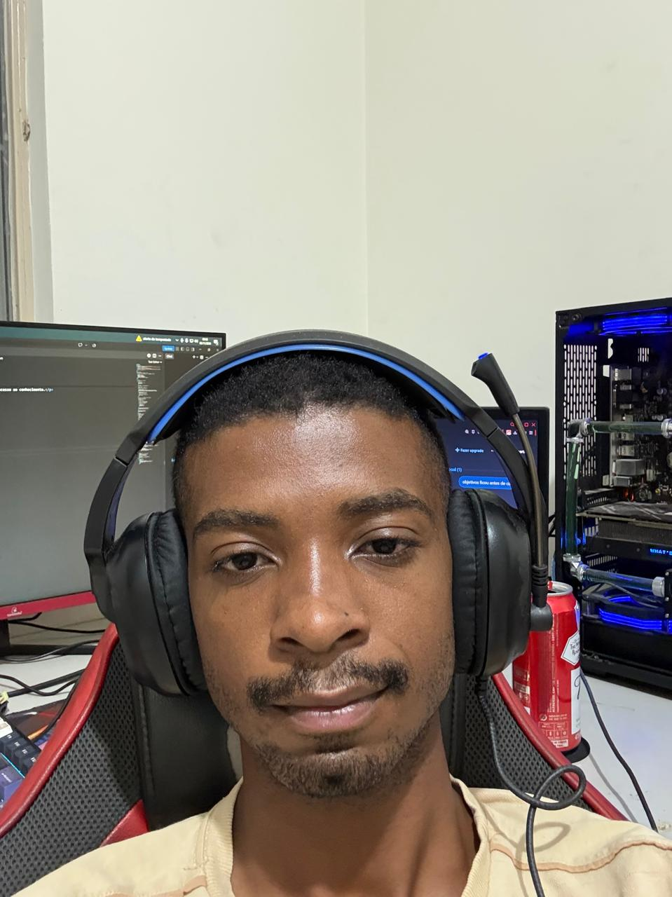

Sistemas
Conhecimentos na área de sistemas, tecnologia e fundamentos da computação.
TECNOLOGIAPORTFÓLIO PESSOAL
21 anos • Divinópolis - MG
Tenho interesse em tecnologia, programação e manutenção de componentes eletrônicos. Estou sempre buscando aprender, desenvolver minhas habilidades e encarar novos desafios.

ÁREA DE INTERESSE
01 / SOBRE MIM
Stenio Savio Henriques de Faria · 21 anos · Divinópolis, MG
Ao longo da minha trajetória, busquei aprender sobre diferentes áreas da tecnologia. Já realizei cursos de sistemas, programação em JavaScript, inglês e manutenção de componentes eletrônicos. Essas experiências ampliaram minha visão e despertaram ainda mais minha vontade de aprender e evoluir profissionalmente.
02 / FORMAÇÃO E CURSOS
Cursos e áreas de estudo que fazem parte da minha formação.
Conhecimentos na área de sistemas, tecnologia e fundamentos da computação.
TECNOLOGIAEstudos de lógica de programação e desenvolvimento utilizando JavaScript.
PROGRAMAÇÃOAprendizado da língua inglesa para ampliar a comunicação e o acesso ao conhecimento.
IDIOMASConhecimentos sobre manutenção e componentes eletrônicos.
ELETRÔNICA03 / HABILIDADES
Entendimento de sistemas e fundamentos da tecnologia.